If element = NULL, comparison is plotted based on all elements.
Otherwise, show scatter or GSEA plots for a single element compared with
previously given differential expression results.
Arguments
- x
referenceComparisonobject: obtained after runningrankSimilarPerturbations()orpredictTargetingDrugs()- element
Character: identifier in the first column of
x- method
Character: method to plot results; choose between
spearman,pearson,gseaorrankProduct(the last one is only available ifelement = NULL)- n
Numeric: number of top and bottom genes to label (if a vector of two numbers is given, the first and second numbers will be used as the number of top and bottom genes to label, respectively); only used if
element = NULL- showMetadata
Boolean: show available metadata information instead of identifiers (if available)? Only used if
element = NULL- plotNonRankedPerturbations
Boolean: plot non-ranked data in grey? Only used if
element = NULL- alpha
Numeric: transparency; only used if
element = NULL- genes
Character: when plotting gene set enrichment analysis (GSEA), plot most up-regulated genes (
genes = "top"), most down-regulated genes (genes = "bottom") or both (genes = "both"); only used ifmethod = "gsea"andgeneset = NULL- ...
Extra arguments currently not used
- zscores
Data frame (GCTX z-scores) or character (respective filepath to load data from file)
- title
Character: plot title (if
NULL, the default title depends on the context; ignored when plotting multiple perturbations)
Value
Plot illustrating the reference comparison
See also
Other functions related with the ranking of CMap perturbations:
as.table.referenceComparison(),
filterCMapMetadata(),
getCMapConditions(),
getCMapPerturbationTypes(),
loadCMapData(),
loadCMapZscores(),
parseCMapID(),
plot.perturbationChanges(),
plotTargetingDrugsVSsimilarPerturbations(),
prepareCMapPerturbations(),
print.similarPerturbations(),
rankSimilarPerturbations()
Other functions related with the prediction of targeting drugs:
as.table.referenceComparison(),
listExpressionDrugSensitivityAssociation(),
loadExpressionDrugSensitivityAssociation(),
plotTargetingDrugsVSsimilarPerturbations(),
predictTargetingDrugs()
Examples
# Example of a differential expression profile
data("diffExprStat")
if (FALSE) {
# Download and load CMap perturbations to compare with
cellLine <- "HepG2"
cmapMetadataKD <- filterCMapMetadata(
"cmapMetadata.txt", cellLine=cellLine,
perturbationType="Consensus signature from shRNAs targeting the same gene")
cmapPerturbationsKD <- prepareCMapPerturbations(
cmapMetadataKD, "cmapZscores.gctx", "cmapGeneInfo.txt", loadZscores=TRUE)
}
# Rank similar CMap perturbations
compareKD <- rankSimilarPerturbations(diffExprStat, cmapPerturbationsKD)
#> Subsetting data based on 8790 intersecting genes (65% of the 13451 input genes)...
#> Comparing against 26 comparisons (1 cell line) using 'spearman, pearson, gsea' (gene size of 150)...
#> Comparison performed in 0.79 secs
# Plot ranked list of CMap perturbations
plot(compareKD, method="spearman")
 plot(compareKD, method="spearman", n=c(7, 3))
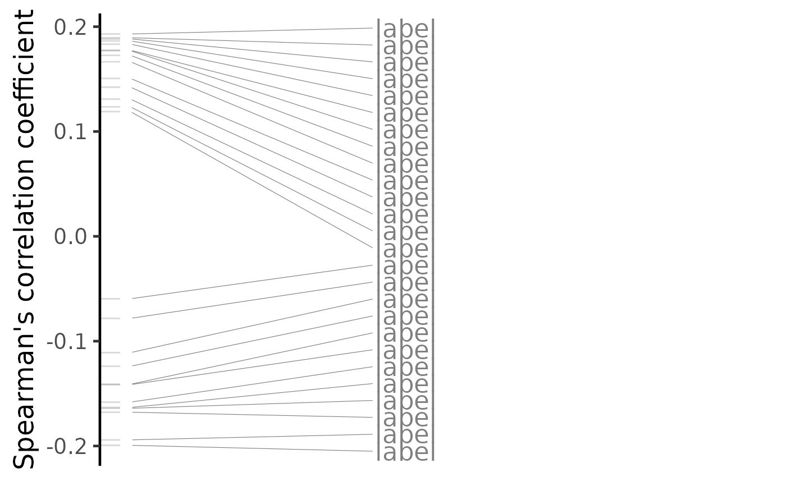
plot(compareKD, method="pearson")
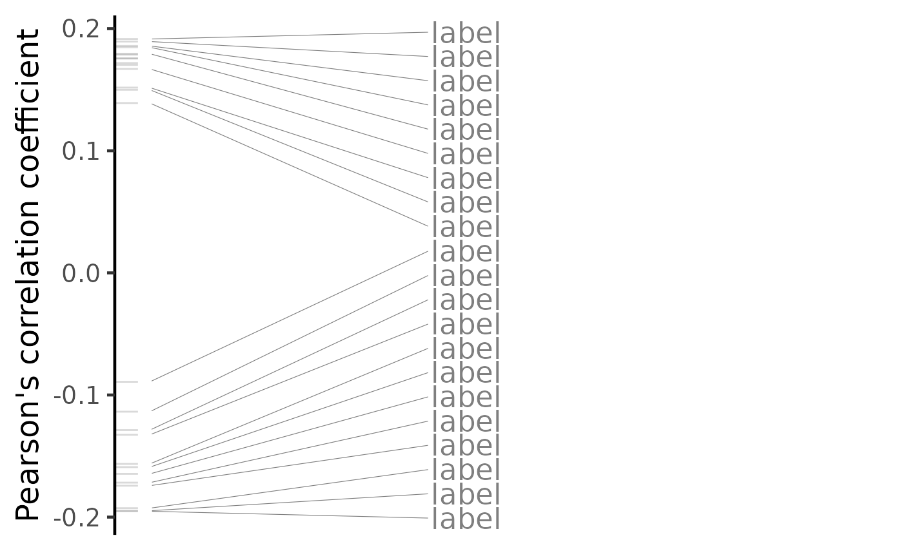
plot(compareKD, method="gsea")
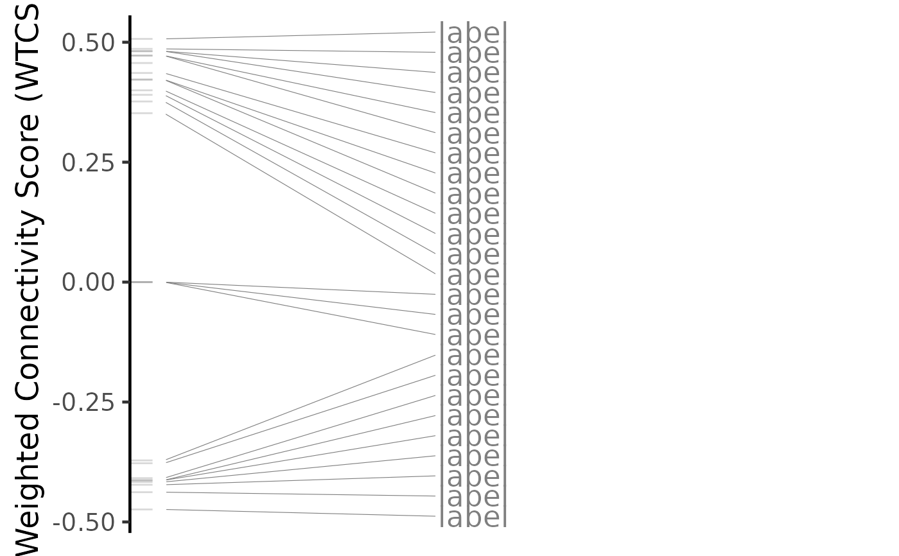
# Plot results for a single perturbation
pert <- compareKD[[1, 1]]
plot(compareKD, pert, method="spearman", zscores=cmapPerturbationsKD)
plot(compareKD, method="spearman", n=c(7, 3))
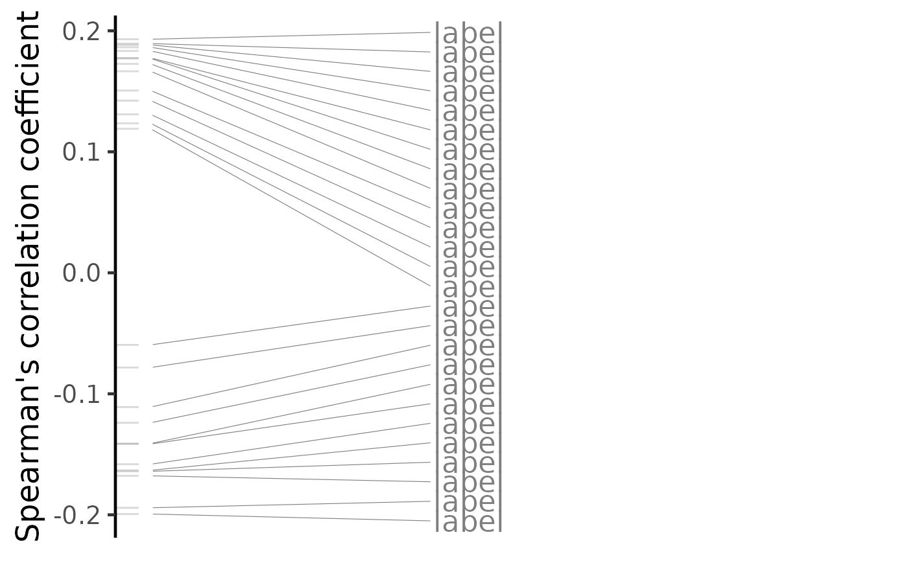
plot(compareKD, method="pearson")
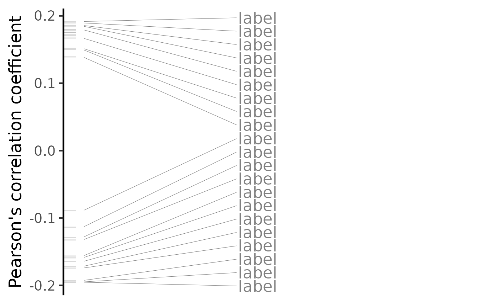
plot(compareKD, method="gsea")
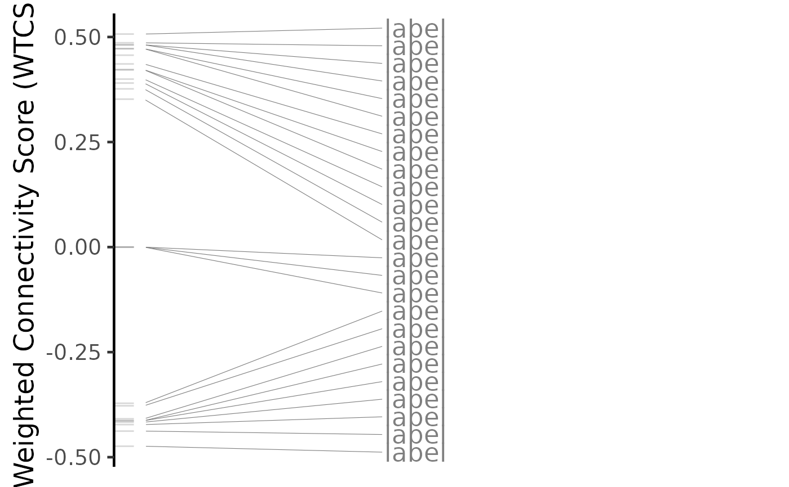
# Plot results for a single perturbation
pert <- compareKD[[1, 1]]
plot(compareKD, pert, method="spearman", zscores=cmapPerturbationsKD)
 plot(compareKD, pert, method="pearson", zscores=cmapPerturbationsKD)
plot(compareKD, pert, method="pearson", zscores=cmapPerturbationsKD)
 plot(compareKD, pert, method="gsea", zscores=cmapPerturbationsKD)
# Predict targeting drugs based on a given differential expression profile
gdsc <- loadExpressionDrugSensitivityAssociation("GDSC 7")
#> Loading data from expressionDrugSensitivityCorGDSC7.qs...
predicted <- predictTargetingDrugs(diffExprStat, gdsc)
#> Subsetting data based on 11396 intersecting genes (85% of the 13451 input genes)...
#> Comparing against 266 GDSC 7 compounds (983 cell lines) using 'spearman, pearson, gsea' (gene size of 150)...
#> Comparison performed in 3.35 secs
# Plot ranked list of targeting drugs
plot(predicted, method="spearman")
plot(compareKD, pert, method="gsea", zscores=cmapPerturbationsKD)
# Predict targeting drugs based on a given differential expression profile
gdsc <- loadExpressionDrugSensitivityAssociation("GDSC 7")
#> Loading data from expressionDrugSensitivityCorGDSC7.qs...
predicted <- predictTargetingDrugs(diffExprStat, gdsc)
#> Subsetting data based on 11396 intersecting genes (85% of the 13451 input genes)...
#> Comparing against 266 GDSC 7 compounds (983 cell lines) using 'spearman, pearson, gsea' (gene size of 150)...
#> Comparison performed in 3.35 secs
# Plot ranked list of targeting drugs
plot(predicted, method="spearman")
 plot(predicted, method="spearman", n=c(7, 3))
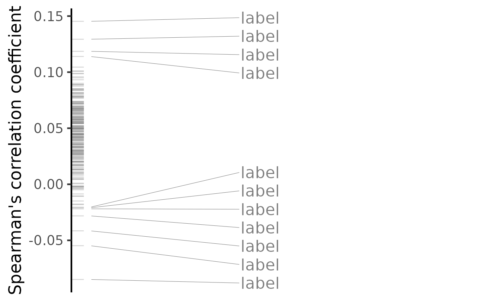
plot(predicted, method="pearson")
plot(predicted, method="spearman", n=c(7, 3))
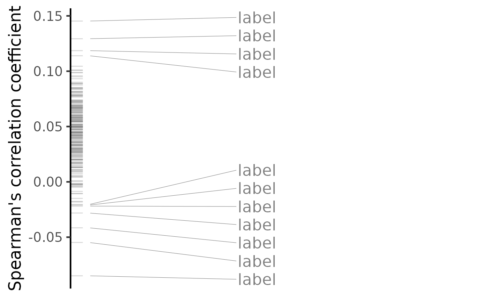
plot(predicted, method="pearson")
 plot(predicted, method="gsea")
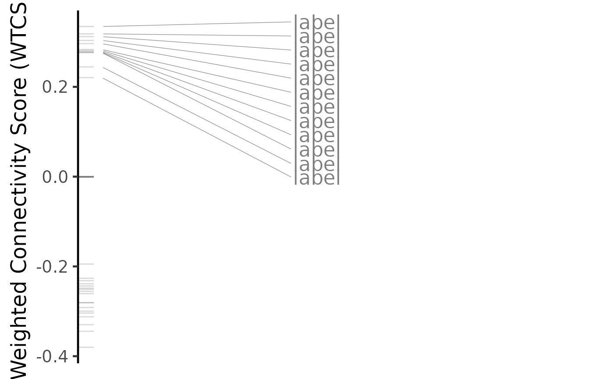
# Plot results for a single targeting drug
drug <- predicted$compound[[4]]
plot(predicted, drug, method="spearman")
#> Loading data from /tmp/Rtmp4qFydA/file390d2f61776d/reference/expressionDrugSensitivityCorGDSC7.qs...
plot(predicted, method="gsea")
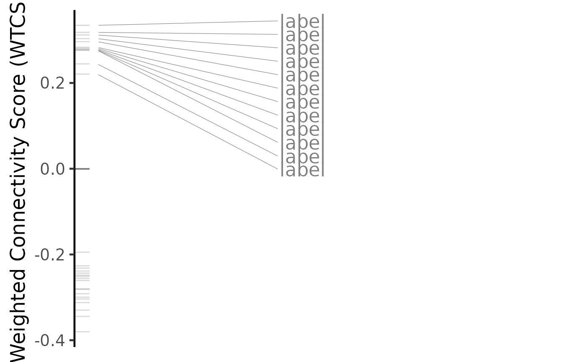
# Plot results for a single targeting drug
drug <- predicted$compound[[4]]
plot(predicted, drug, method="spearman")
#> Loading data from /tmp/Rtmp4qFydA/file390d2f61776d/reference/expressionDrugSensitivityCorGDSC7.qs...
 plot(predicted, drug, method="pearson")
#> Loading data from /tmp/Rtmp4qFydA/file390d2f61776d/reference/expressionDrugSensitivityCorGDSC7.qs...
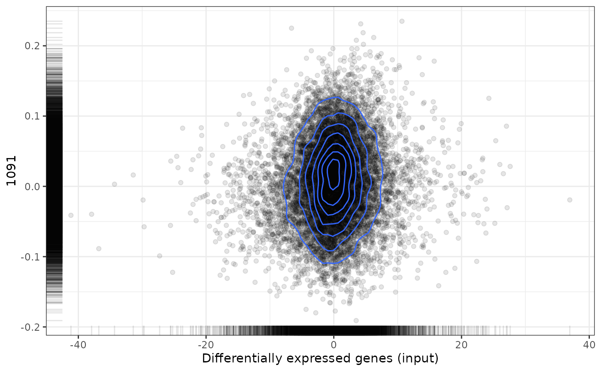
plot(predicted, drug, method="gsea")
#> Loading data from /tmp/Rtmp4qFydA/file390d2f61776d/reference/expressionDrugSensitivityCorGDSC7.qs...
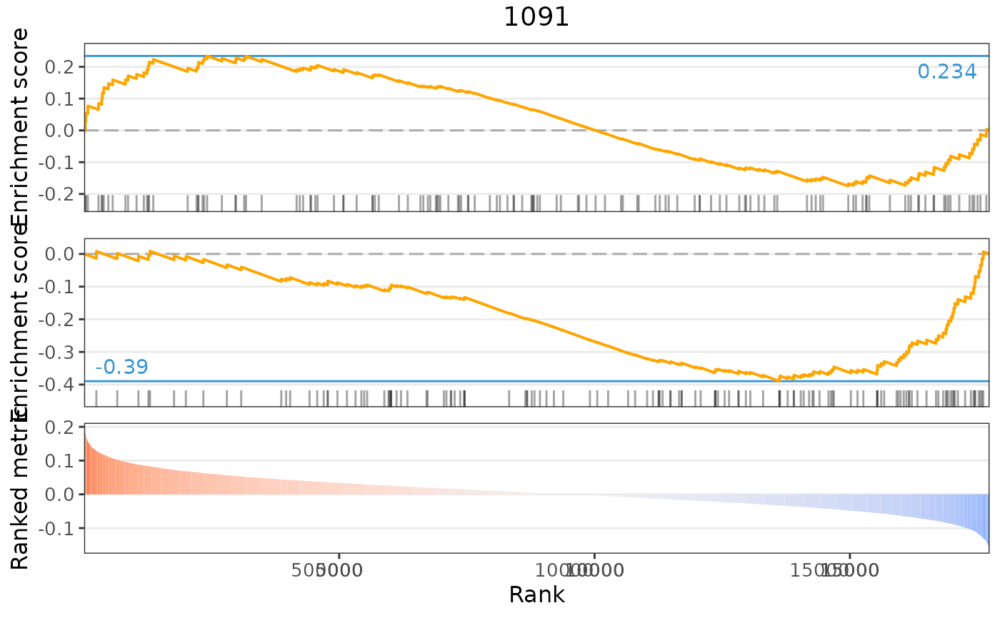
plot(predicted, drug, method="pearson")
#> Loading data from /tmp/Rtmp4qFydA/file390d2f61776d/reference/expressionDrugSensitivityCorGDSC7.qs...
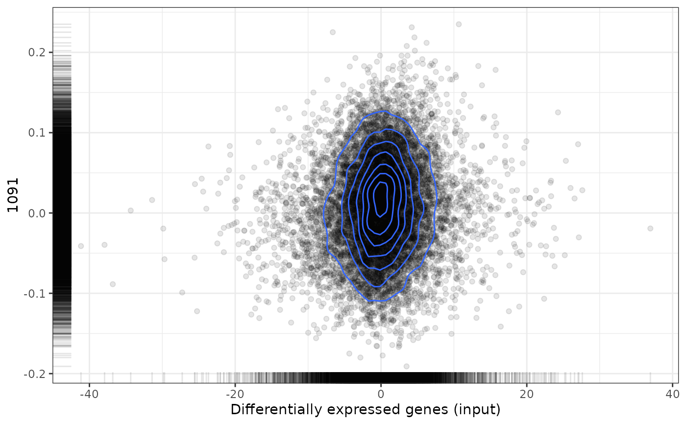
plot(predicted, drug, method="gsea")
#> Loading data from /tmp/Rtmp4qFydA/file390d2f61776d/reference/expressionDrugSensitivityCorGDSC7.qs...
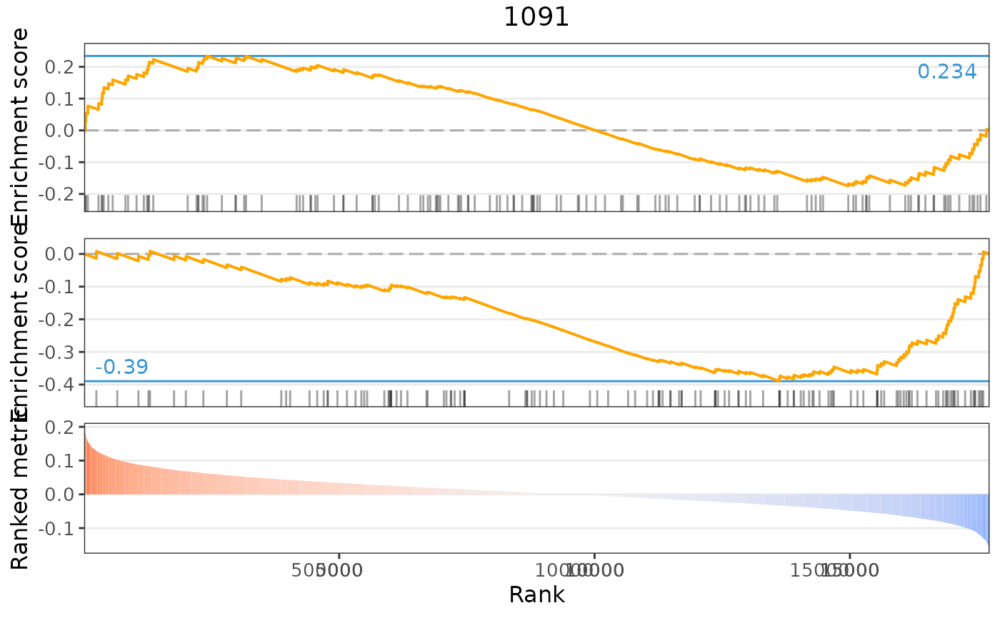